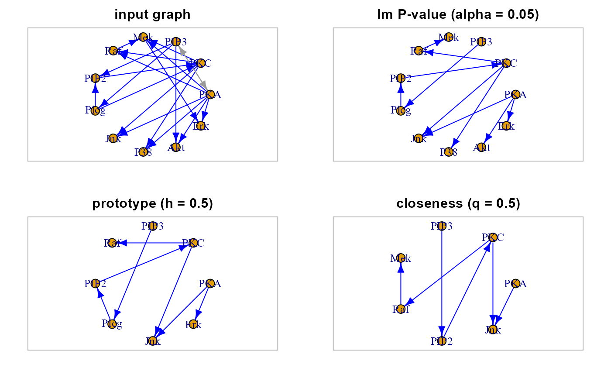
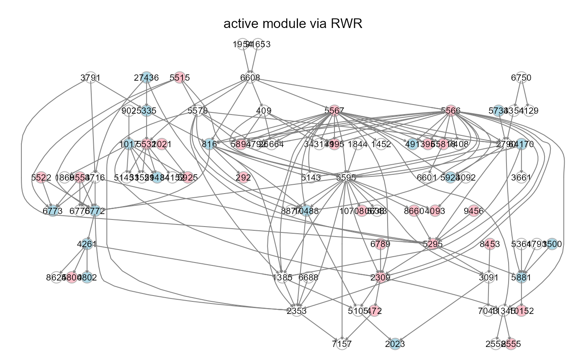

<!-- Generated by pkgdown: do not edit by hand -->
<!DOCTYPE html>
<html lang="en">
  <head>
  <meta charset="utf-8">
<meta http-equiv="X-UA-Compatible" content="IE=edge">
<meta name="viewport" content="width=device-width, initial-scale=1.0">

<title>Active module identification — activeModule • SEMgraph</title>


<!-- jquery -->
<script src="https://cdnjs.cloudflare.com/ajax/libs/jquery/3.4.1/jquery.min.js" integrity="sha256-CSXorXvZcTkaix6Yvo6HppcZGetbYMGWSFlBw8HfCJo=" crossorigin="anonymous"></script>
<!-- Bootstrap -->

<link rel="stylesheet" href="https://cdnjs.cloudflare.com/ajax/libs/twitter-bootstrap/3.4.1/css/bootstrap.min.css" integrity="sha256-bZLfwXAP04zRMK2BjiO8iu9pf4FbLqX6zitd+tIvLhE=" crossorigin="anonymous" />

<script src="https://cdnjs.cloudflare.com/ajax/libs/twitter-bootstrap/3.4.1/js/bootstrap.min.js" integrity="sha256-nuL8/2cJ5NDSSwnKD8VqreErSWHtnEP9E7AySL+1ev4=" crossorigin="anonymous"></script>

<!-- bootstrap-toc -->
<link rel="stylesheet" href="../bootstrap-toc.css">
<script src="../bootstrap-toc.js"></script>

<!-- Font Awesome icons -->
<link rel="stylesheet" href="https://cdnjs.cloudflare.com/ajax/libs/font-awesome/5.12.1/css/all.min.css" integrity="sha256-mmgLkCYLUQbXn0B1SRqzHar6dCnv9oZFPEC1g1cwlkk=" crossorigin="anonymous" />
<link rel="stylesheet" href="https://cdnjs.cloudflare.com/ajax/libs/font-awesome/5.12.1/css/v4-shims.min.css" integrity="sha256-wZjR52fzng1pJHwx4aV2AO3yyTOXrcDW7jBpJtTwVxw=" crossorigin="anonymous" />

<!-- clipboard.js -->
<script src="https://cdnjs.cloudflare.com/ajax/libs/clipboard.js/2.0.6/clipboard.min.js" integrity="sha256-inc5kl9MA1hkeYUt+EC3BhlIgyp/2jDIyBLS6k3UxPI=" crossorigin="anonymous"></script>

<!-- headroom.js -->
<script src="https://cdnjs.cloudflare.com/ajax/libs/headroom/0.11.0/headroom.min.js" integrity="sha256-AsUX4SJE1+yuDu5+mAVzJbuYNPHj/WroHuZ8Ir/CkE0=" crossorigin="anonymous"></script>
<script src="https://cdnjs.cloudflare.com/ajax/libs/headroom/0.11.0/jQuery.headroom.min.js" integrity="sha256-ZX/yNShbjqsohH1k95liqY9Gd8uOiE1S4vZc+9KQ1K4=" crossorigin="anonymous"></script>

<!-- pkgdown -->
<link href="../pkgdown.css" rel="stylesheet">
<script src="../pkgdown.js"></script>


<meta property="og:title" content="Active module identification — activeModule" />
<meta property="og:description" content="Uses different information flow and tree-based strategies 
for identifying active modules (e.g., disease modules), showing a 
perturbed subset of nodes and edges. 
Function scalability enables graph reduction at both pathway and 
entire interactome scales." />


<!-- mathjax -->
<script src="https://cdnjs.cloudflare.com/ajax/libs/mathjax/2.7.5/MathJax.js" integrity="sha256-nvJJv9wWKEm88qvoQl9ekL2J+k/RWIsaSScxxlsrv8k=" crossorigin="anonymous"></script>
<script src="https://cdnjs.cloudflare.com/ajax/libs/mathjax/2.7.5/config/TeX-AMS-MML_HTMLorMML.js" integrity="sha256-84DKXVJXs0/F8OTMzX4UR909+jtl4G7SPypPavF+GfA=" crossorigin="anonymous"></script>

<!--[if lt IE 9]>
<script src="https://oss.maxcdn.com/html5shiv/3.7.3/html5shiv.min.js"></script>
<script src="https://oss.maxcdn.com/respond/1.4.2/respond.min.js"></script>
<![endif]-->


  </head>

  <body data-spy="scroll" data-target="#toc">
    <div class="container template-reference-topic">
      <header>
      <div class="navbar navbar-default navbar-fixed-top" role="navigation">
  <div class="container">
    <div class="navbar-header">
      <button type="button" class="navbar-toggle collapsed" data-toggle="collapse" data-target="#navbar" aria-expanded="false">
        <span class="sr-only">Toggle navigation</span>
        <span class="icon-bar"></span>
        <span class="icon-bar"></span>
        <span class="icon-bar"></span>
      </button>
      <span class="navbar-brand">
        <a class="navbar-link" href="../index.html">SEMgraph</a>
        <span class="version label label-default" data-toggle="tooltip" data-placement="bottom" title="Released version">1.0.3</span>
      </span>
    </div>

    <div id="navbar" class="navbar-collapse collapse">
      <ul class="nav navbar-nav">
        <li>
  <a href="../index.html">
    <span class="fas fa-home fa-lg"></span>
     
  </a>
</li>
<li>
  <a href="../reference/index.html">Reference</a>
</li>
      </ul>
      <ul class="nav navbar-nav navbar-right">
        <li>
  <a href="https://github.com/fernandoPalluzzi/SEMgraph/">
    <span class="fab fa-github fa-lg"></span>
     
  </a>
</li>
      </ul>
      
    </div><!--/.nav-collapse -->
  </div><!--/.container -->
</div><!--/.navbar -->

      

      </header>

<div class="row">
  <div class="col-md-9 contents">
    <div class="page-header">
    <h1>Active module identification</h1>
    <small class="dont-index">Source: <a href='https://github.com/fernandoPalluzzi/SEMgraph/blob/master/R/semWeights.R'><code>R/semWeights.R</code></a></small>
    <div class="hidden name"><code>activeModule.Rd</code></div>
    </div>

    <div class="ref-description">
    <p>Uses different information flow and tree-based strategies 
for identifying active modules (e.g., disease modules), showing a 
perturbed subset of nodes and edges. 
Function scalability enables graph reduction at both pathway and 
entire interactome scales.</p>
    </div>

    <pre class="usage"><span class='fu'>activeModule</span><span class='op'>(</span>
  <span class='va'>graph</span>,
  <span class='va'>type</span>,
  <span class='va'>seed</span>,
  eweight <span class='op'>=</span> <span class='st'>"none"</span>,
  alpha <span class='op'>=</span> <span class='fl'>0.05</span>,
  q <span class='op'>=</span> <span class='fl'>0.5</span>,
  limit <span class='op'>=</span> <span class='fl'>30000</span>,
  <span class='va'>...</span>
<span class='op'>)</span></pre>

    <h2 class="hasAnchor" id="arguments"><a class="anchor" href="#arguments"></a>Arguments</h2>
    <table class="ref-arguments">
    <colgroup><col class="name" /><col class="desc" /></colgroup>
    <tr>
      <th>graph</th>
      <td><p>An igraph object.</p></td>
    </tr>
    <tr>
      <th>type</th>
      <td><p>Module identification method. If <code>type = "kou"</code>, 
the Steiner tree algorithm will be applied. 
If <code>type = "usp"</code>, the resulting graph will be the union of all 
significant shortest paths. If <code>type = "rwr"</code>, the random walk 
with restart algorithm will be enabled. Finally, if <code>type = "hdi"</code>, 
the heat diffusion algorithm is used.</p></td>
    </tr>
    <tr>
      <th>seed</th>
      <td><p>Either a user-defined vector containing seed node names 
or one among: "pvlm", "proto", or "qi", corresponding to the seed 
name attribute yielded by <code><a href='weightGraph.html'>weightGraph</a></code>.</p></td>
    </tr>
    <tr>
      <th>eweight</th>
      <td><p>Edge weight type derived from
<code><a href='weightGraph.html'>weightGraph</a></code> or from user-defined distances. 
This option determines the weight-to-distance transform. If set to 
"none" (default), edge weights will be set to 1. 
If <code>eweight = "kegg"</code>, repressing interactions (-1) will be set 
to 1 (maximum distance), neutral interactions (0) will be set to 0.5, 
and activating interactions (+1) will be set to 0 (minimum distance).
If <code>eweight = "zsign"</code>, all significant interactions will be set 
to 0 (minimum distance), while non-significant ones will be set to 1.
If <code>eweight = "pvalue"</code>, weights (p-values) will be transformed 
to the inverse of negative base-10 logarithm. 
If <code>eweight = "custom"</code>, the algorithm will use the distance 
measure specified by the user as "weight" edge attribute.</p></td>
    </tr>
    <tr>
      <th>alpha</th>
      <td><p>Significance level to assess shortest paths significance, 
when type is "usp". By default, <code>alpha = 0.05</code>.</p></td>
    </tr>
    <tr>
      <th>q</th>
      <td><p>Inclusion quantile for the "rwr" and "hdi" algorithms. The higher 
the q, the closer the nodes to the input seeds, the smaller the output 
graph induced by the q-top ranking nodes. 
By default, <code>q = 0.5</code> (i.e., the top 50% of nodes are selected).</p></td>
    </tr>
    <tr>
      <th>limit</th>
      <td><p>An integer value corresponding to the number of graph 
edges. If <code>type = "usp"</code>, beyond this limit, multicore computation 
is enabled to reduce the computational burden. 
By default, <code>limit = 30000</code>.</p></td>
    </tr>
    <tr>
      <th>...</th>
      <td><p>Currently ignored.</p></td>
    </tr>
    </table>

    <h2 class="hasAnchor" id="value"><a class="anchor" href="#value"></a>Value</h2>

    <p>An active module of class <code>igraph</code>.</p>
    <h2 class="hasAnchor" id="details"><a class="anchor" href="#details"></a>Details</h2>

    <p>Graph filtering algorithms include:</p><ol>
<li><p>"kou", the Steiner tree connecting a set of seed nodes, using 
the algorithm from Kou et al. (1981);</p></li>
<li><p>"usp", generates a subnetwork as the union of the significant 
(P-value &lt; alpha) shortest paths between the seeds set;</p></li>
<li><p>"rwr", Random Walk with Restart; wrapper for random.walk of the 
R package diffusr;</p></li>
<li><p>"hdi", Heat Diffusion algorithm; wrapper for heat.diffusion of 
the R package diffusr.</p></li>
</ol>

    <h2 class="hasAnchor" id="references"><a class="anchor" href="#references"></a>References</h2>

    <p>Palluzzi F, Grassi M (2021). SEMgraph: An R Package for Causal Network 
Analysis of High-Throughput Data with Structural Equation Models. 
&lt;arXiv:2103.08332&gt;</p>
<p>Kou L, Markowsky G, Berman L (1981). A fast algorithm for Steiner trees.
Acta Informatica, 15(2): 141-145. &lt;https://doi.org/10.1007/BF00288961&gt;</p>
<p>Simon Dirmeier (2018). diffusr: Network Diffusion Algorithms. R
package version 0.1.4.
&lt;https://CRAN.R-project.org/package=diffusr&gt;</p>
    <h2 class="hasAnchor" id="author"><a class="anchor" href="#author"></a>Author</h2>

    <p>Mario Grassi <a href='mailto:mario.grassi@unipv.it'>mario.grassi@unipv.it</a></p>

    <h2 class="hasAnchor" id="examples"><a class="anchor" href="#examples"></a>Examples</h2>
    <pre class="examples"><div class='input'>
<span class='co'># Graph weighting</span>
<span class='va'>G</span> <span class='op'>&lt;-</span> <span class='fu'><a href='weightGraph.html'>weightGraph</a></span><span class='op'>(</span>graph <span class='op'>=</span> <span class='va'>sachs</span><span class='op'>$</span><span class='va'>graph</span>, data <span class='op'>=</span> <span class='va'>sachs</span><span class='op'>$</span><span class='va'>pkc</span>, group <span class='op'>=</span> <span class='va'>sachs</span><span class='op'>$</span><span class='va'>group</span>,
                 method <span class='op'>=</span> <span class='st'>"r2z"</span>,
                 seed <span class='op'>=</span> <span class='fu'><a href='https://rdrr.io/r/base/c.html'>c</a></span><span class='op'>(</span><span class='fl'>0.05</span>, <span class='fl'>0.5</span>, <span class='fl'>0.5</span><span class='op'>)</span><span class='op'>)</span>

<span class='co'># RWR algorithm, seeds and edge P-values as weights</span>
<span class='va'>R1</span> <span class='op'>&lt;-</span> <span class='fu'>activeModule</span><span class='op'>(</span>graph <span class='op'>=</span> <span class='va'>G</span>, type <span class='op'>=</span> <span class='st'>"kou"</span>, seed <span class='op'>=</span> <span class='st'>"pvlm"</span>, eweight <span class='op'>=</span> <span class='st'>"pvalue"</span><span class='op'>)</span>
<span class='va'>R2</span> <span class='op'>&lt;-</span> <span class='fu'>activeModule</span><span class='op'>(</span>graph <span class='op'>=</span> <span class='va'>G</span>, type <span class='op'>=</span> <span class='st'>"kou"</span>, seed <span class='op'>=</span> <span class='st'>"proto"</span>, eweight <span class='op'>=</span> <span class='st'>"pvalue"</span><span class='op'>)</span>
<span class='va'>R3</span> <span class='op'>&lt;-</span> <span class='fu'>activeModule</span><span class='op'>(</span>graph <span class='op'>=</span> <span class='va'>G</span>, type <span class='op'>=</span> <span class='st'>"kou"</span>, seed <span class='op'>=</span> <span class='st'>"qi"</span>, eweight <span class='op'>=</span> <span class='st'>"pvalue"</span><span class='op'>)</span>

<span class='co'># Graphs</span>
<span class='fu'><a href='https://rdrr.io/r/graphics/par.html'>par</a></span><span class='op'>(</span>mfrow<span class='op'>=</span><span class='fu'><a href='https://rdrr.io/r/base/c.html'>c</a></span><span class='op'>(</span><span class='fl'>2</span>,<span class='fl'>2</span><span class='op'>)</span>, mar<span class='op'>=</span><span class='fu'><a href='https://rdrr.io/r/base/rep.html'>rep</a></span><span class='op'>(</span><span class='fl'>2</span>, <span class='fl'>4</span><span class='op'>)</span><span class='op'>)</span>
<span class='fu'><a href='https://rdrr.io/r/graphics/plot.default.html'>plot</a></span><span class='op'>(</span><span class='va'>G</span>, layout <span class='op'>=</span> <span class='va'>layout.circle</span>, main <span class='op'>=</span> <span class='st'>"input graph"</span><span class='op'>)</span>
<span class='fu'><a href='https://rdrr.io/r/graphics/box.html'>box</a></span><span class='op'>(</span>col <span class='op'>=</span> <span class='st'>"gray"</span><span class='op'>)</span>
<span class='fu'><a href='https://rdrr.io/r/graphics/plot.default.html'>plot</a></span><span class='op'>(</span><span class='va'>R1</span>, layout <span class='op'>=</span> <span class='va'>layout.circle</span>, main <span class='op'>=</span> <span class='st'>"lm P-value (alpha = 0.05)"</span><span class='op'>)</span>
<span class='fu'><a href='https://rdrr.io/r/graphics/box.html'>box</a></span><span class='op'>(</span>col <span class='op'>=</span> <span class='st'>"gray"</span><span class='op'>)</span>
<span class='fu'><a href='https://rdrr.io/r/graphics/plot.default.html'>plot</a></span><span class='op'>(</span><span class='va'>R2</span>, layout <span class='op'>=</span> <span class='va'>layout.circle</span>, main <span class='op'>=</span> <span class='st'>"prototype (h = 0.5)"</span><span class='op'>)</span>
<span class='fu'><a href='https://rdrr.io/r/graphics/box.html'>box</a></span><span class='op'>(</span>col <span class='op'>=</span> <span class='st'>"gray"</span><span class='op'>)</span>
<span class='fu'><a href='https://rdrr.io/r/graphics/plot.default.html'>plot</a></span><span class='op'>(</span><span class='va'>R3</span>, layout <span class='op'>=</span> <span class='va'>layout.circle</span>, main <span class='op'>=</span> <span class='st'>"closeness (q = 0.5)"</span><span class='op'>)</span>
</div><div class='input'><span class='fu'><a href='https://rdrr.io/r/graphics/box.html'>box</a></span><span class='op'>(</span>col <span class='op'>=</span> <span class='st'>"gray"</span><span class='op'>)</span>
</div><div class='img'></div><div class='input'>
<span class='co'># \dontrun{</span>

<span class='co'># Install data examples, reference networks, and pathways</span>
<span class='co'># devtools::install_github("fernandoPalluzzi/SEMdata")</span>
<span class='kw'><a href='https://rdrr.io/r/base/library.html'>library</a></span><span class='op'>(</span><span class='va'>SEMdata</span><span class='op'>)</span>

<span class='co'># Weight and reduce the whole KEGG interactome, using RWR</span>

<span class='va'>kegg1</span> <span class='op'>&lt;-</span> <span class='fu'><a href='weightGraph.html'>weightGraph</a></span><span class='op'>(</span><span class='va'>kegg</span>, <span class='va'>alsData</span><span class='op'>$</span><span class='va'>exprs</span>, <span class='va'>alsData</span><span class='op'>$</span><span class='va'>group</span>,
                     method <span class='op'>=</span> <span class='st'>"r2z"</span>,
                     seed <span class='op'>=</span> <span class='fu'><a href='https://rdrr.io/r/base/c.html'>c</a></span><span class='op'>(</span><span class='fl'>5E-8</span>, <span class='fl'>0.5</span>, <span class='fl'>0.5</span><span class='op'>)</span><span class='op'>)</span>

<span class='co'># Set quantile value, based on the top k nodes</span>
<span class='va'>k</span> <span class='op'>&lt;-</span> <span class='fu'><a href='https://rdrr.io/r/base/sum.html'>sum</a></span><span class='op'>(</span><span class='fu'>V</span><span class='op'>(</span><span class='va'>kegg1</span><span class='op'>)</span><span class='op'>$</span><span class='va'>pvlm</span><span class='op'>)</span>
<span class='va'>q</span> <span class='op'>&lt;-</span> <span class='fl'>1</span> <span class='op'>-</span> <span class='va'>k</span><span class='op'>/</span><span class='fu'>vcount</span><span class='op'>(</span><span class='va'>kegg1</span><span class='op'>)</span>

<span class='va'>ig1</span> <span class='op'>&lt;-</span> <span class='fu'>activeModule</span><span class='op'>(</span>graph <span class='op'>=</span> <span class='va'>kegg1</span>, type <span class='op'>=</span> <span class='st'>"rwr"</span>, seed <span class='op'>=</span> <span class='st'>"pvlm"</span>,
                    eweight <span class='op'>=</span> <span class='st'>"pvalue"</span>,
                    q <span class='op'>=</span> <span class='va'>q</span><span class='op'>)</span>
</div><div class='output co'>#&gt; <span class='message'>normalizing column vectors!</span></div><div class='output co'>#&gt; <span class='message'>normalizing column vectors!</span></div><div class='input'><span class='va'>ig1</span> <span class='op'>&lt;-</span> <span class='fu'><a href='graph2dag.html'>graph2dag</a></span><span class='op'>(</span><span class='va'>ig1</span>, <span class='va'>alsData</span><span class='op'>$</span><span class='va'>exprs</span><span class='op'>)</span>
</div><div class='output co'>#&gt; DAG conversion : TRUE </div><div class='input'><span class='va'>ig1</span> <span class='op'>&lt;-</span> <span class='fu'><a href='properties.html'>properties</a></span><span class='op'>(</span><span class='va'>ig1</span><span class='op'>)</span><span class='op'>[[</span><span class='fl'>1</span><span class='op'>]</span><span class='op'>]</span>
</div><div class='output co'>#&gt; Frequency distribution of graph components
#&gt; 
#&gt;   n.nodes n.graphs
#&gt; 1       1       22
#&gt; 2       2        5
#&gt; 3      84        1
#&gt; 
#&gt; Percent of vertices in the giant component: 72.4 %
#&gt; 
#&gt;   is.simple      is.dag is.directed is.weighted 
#&gt;        TRUE        TRUE        TRUE        TRUE 
#&gt; 
#&gt; which.mutual.FALSE 
#&gt;                157 </div><div class='input'>
<span class='co'># Fitting</span>
<span class='va'>sem1</span> <span class='op'>&lt;-</span> <span class='fu'><a href='SEMrun.html'>SEMrun</a></span><span class='op'>(</span><span class='va'>ig1</span>, <span class='va'>alsData</span><span class='op'>$</span><span class='va'>exprs</span>, <span class='va'>alsData</span><span class='op'>$</span><span class='va'>group</span>, algo <span class='op'>=</span> <span class='st'>"ricf"</span><span class='op'>)</span>
</div><div class='output co'>#&gt; RICF solver ended normally after 2 iterations 
#&gt; 
#&gt; deviance/df: 6.424352  srmr: 0.303184 
#&gt; 
#&gt;       Brown's combined P-value of node activation: 0 
#&gt; 
#&gt; Brown's combined P-value of node inhibition: 0 
#&gt; </div><div class='input'><span class='fu'><a href='https://rdrr.io/r/utils/head.html'>head</a></span><span class='op'>(</span><span class='va'>sem1</span><span class='op'>$</span><span class='va'>gest</span><span class='op'>)</span>
</div><div class='output co'>#&gt;       Test   Stat tail       pvalue
#&gt; D        t 0.7747   &gt;&lt; 4.424512e-01
#&gt; A        t 0.4527   &gt;&lt; 6.339077e-01
#&gt; E        t 1.0148   &gt;&lt; 2.980953e-01
#&gt; 10152    t 6.0412   &gt;&lt; 1.145262e-09
#&gt; 51529    t 1.9714   &gt;&lt; 5.280305e-02
#&gt; 51433    t 0.7318   &gt;&lt; 4.830873e-01</div><div class='input'>
<span class='fu'><a href='https://rdrr.io/r/graphics/par.html'>par</a></span><span class='op'>(</span>mfrow<span class='op'>=</span><span class='fu'><a href='https://rdrr.io/r/base/c.html'>c</a></span><span class='op'>(</span><span class='fl'>1</span>,<span class='fl'>1</span><span class='op'>)</span>, mar<span class='op'>=</span><span class='fu'><a href='https://rdrr.io/r/base/rep.html'>rep</a></span><span class='op'>(</span><span class='fl'>2</span>, <span class='fl'>4</span><span class='op'>)</span><span class='op'>)</span>
<span class='fu'><a href='gplot.html'>gplot</a></span><span class='op'>(</span><span class='va'>sem1</span><span class='op'>$</span><span class='va'>graph</span>, main<span class='op'>=</span> <span class='st'>"active module via RWR"</span><span class='op'>)</span>
</div><div class='img'></div><div class='input'>
<span class='co'># }</span>

</div></pre>
  </div>
  <div class="col-md-3 hidden-xs hidden-sm" id="pkgdown-sidebar">
    <nav id="toc" data-toggle="toc" class="sticky-top">
      <h2 data-toc-skip>Contents</h2>
    </nav>
  </div>
</div>


      <footer>
      <div class="copyright">
  <p>Developed by Mario Grassi, Fernando Palluzzi.</p>
</div>

<div class="pkgdown">
  <p>Site built with <a href="https://pkgdown.r-lib.org/">pkgdown</a> 1.6.1.</p>
</div>

      </footer>
   </div>

  


  </body>
</html>


